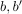
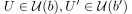
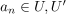
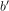
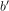
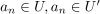
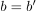
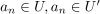
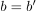

Eindeutigkeit des Grenzwert einer Folge in Hausdorffräumen
1. Satz
Sei  ein Hausdorff-Raum und
ein Hausdorff-Raum und  eine Konvergente Folge, dann ist der Grenzwert eindeutig
eine Konvergente Folge, dann ist der Grenzwert eindeutig
2. Beweis
Seien  Grenzwerte von so folgt für jede Umgebung , dass fast alle Folgenglieder .
Damit folgt insbesondere, dass zwei Umgebungen von  und  nicht paarweise disjunkt sein können, da für hinreichend große
und  nicht paarweise disjunkt sein können, da für hinreichend große   gilt.
Damit folgt nach der Hausdorff-Eigenschaft 
 gilt.
Damit folgt nach der Hausdorff-Eigenschaft 